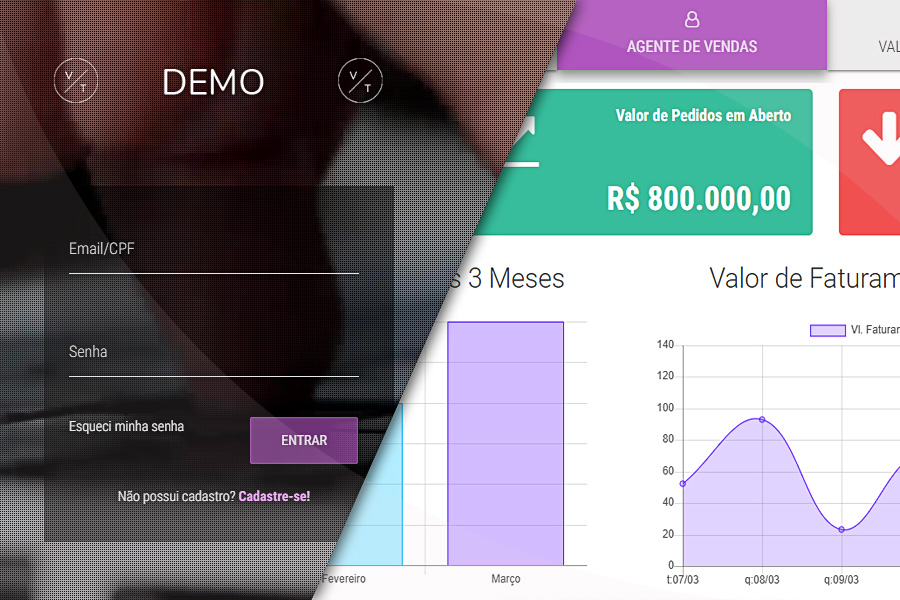

Dashboard
Template estático de Dashboard de relatórios. ( Tecnologias usadas: HTML5, CSS3, Bootstrap, JQuery )
https://vitortakara.github.io/portfolio-demos/dashboard_1/index.html

./img/portfolio/portfolio_archive/dashboard1_1.jpg
./img/portfolio/portfolio_archive/dashboard1_2.jpg
./img/portfolio/portfolio_archive/dashboard1_3.jpg
./img/portfolio/portfolio_archive/dashboard_relatorio_1.jpg
./img/portfolio/portfolio_archive/dashboard_relatorio_2.jpg
./img/portfolio/portfolio_archive/dashboard_relatorio_3.jpg


Dashboard de Relatórios
Template estático de Dashboard de relatórios. ( Tecnologias usadas: HTML5, CSS3, Bootstrap, JQuery )
https://vitortakara.github.io/portfolio-demos/dashboard_relatorio/dist/
./img/portfolio/portfolio_archive/dashboard_relatorio_1.jpg
./img/portfolio/portfolio_archive/dashboard_relatorio_2.jpg
./img/portfolio/portfolio_archive/dashboard_relatorio_3.jpg